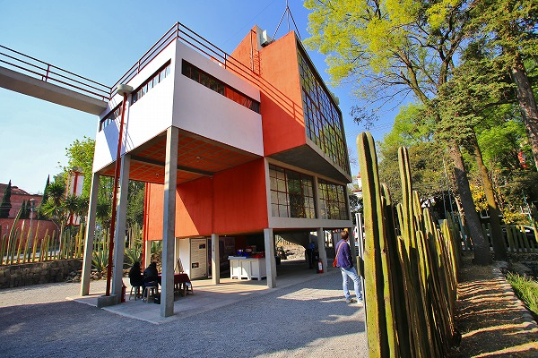
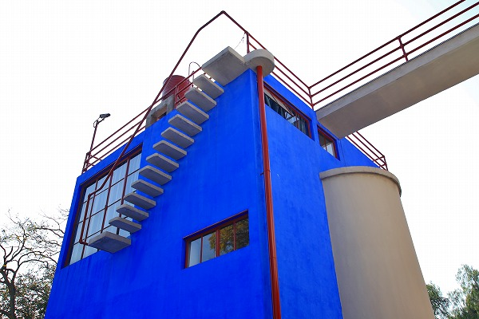
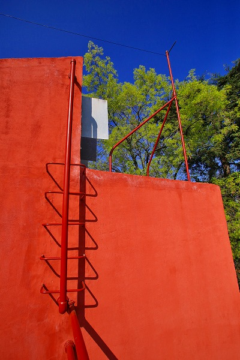
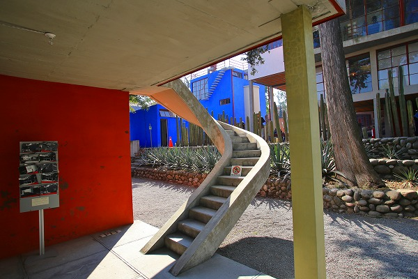
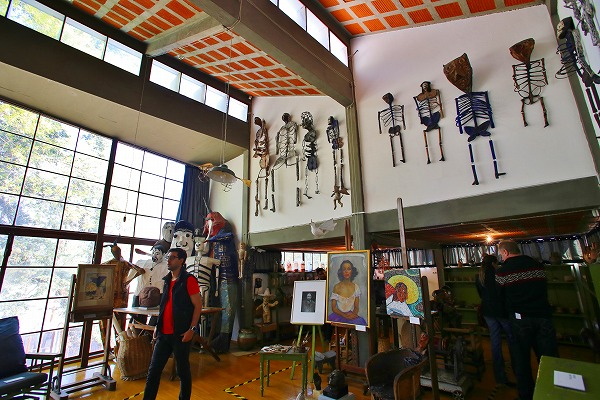
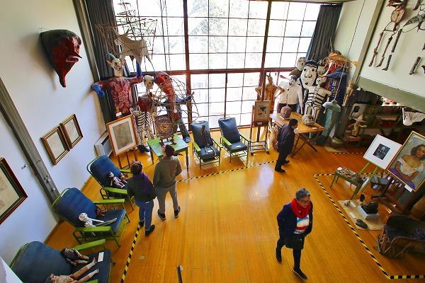

ディエゴ・リベラとフリーダ・カーロの家/メキシコシティ Museo Casa Esyudio Diego Rivera y Frida Kahlo/CDMX
メキシコの滞在もあと僅かとなって来た。
あとはメキシコシティ市内にある博物館や美術館を巡って旅の仕上げとしたい。
まず訪れたのは
国立人類学博物館。
メキシコの歴史と民族の全てを網羅した世界屈指の規模の博物館だ。
大阪の国立民族学博物館に匹敵する濃い内容の展示だ。しかも全部メキシコネタなのが恐ろしい。
まあ、あまりにも有名なのでここでは割愛するが、
メキシコにいったら絶対訪れるべき博物館である事だけは記させていただく。
急ぎ足で見ても半日かかるよ。
さて。
それ以外にもメキシコシティには様々な博物館や美術館がある。
聞いたところによるとメキシコシティは博物館の多さでは世界でも指折りなのだという。
その中で私が気になったのは
フリーダ・カーロ関連の博物館や美術館だ。
フリーダ・カーロは
メキシコを代表する女流画家で、彼女の情念溢れる作品は世界中の人々を魅了しているのだ。
そんなフリーダ・カーロが住んでいた家が公開されているというので見に行くことにした。
場所はメキシコシティの高級住宅地。
ここに1934年から1940年までの間、フリーダ・カーロと夫のディエゴ・リベラが暮らしていたのだ。

建物は大変特徴的で、当時最先端の
メッチャモダニズム建築。

建物は大きく分けて2つ。
1棟が赤い建物でもう1棟が青い建物。
この
キャンチレバーの外階段とかメチャカッチョ良くないですか？
2つの建物は中空の通路で繋がっている。

随所に見られるモダニズムっぷりがその手の建築が好きな人には堪らない。
ええ、私もその一人なのです。

この階段とかおしっこチビりそうに堪らんのですよ。
この建物は恐らく夫の
ディエゴ・リベラの趣味が大いに反映されていると見た。
彼もまたメキシコを代表する画家であり、メキシコの革命の中心にいた人物でもある。
建物のなかには彼のコレクションなのだろう、ロシアアバンギャルドの画集などが展示されていた。
フリーダ・カーロとディエゴ・リベラの画業と人生についてはまさに波乱万丈戸しか言いようのない人生であった。
特にフリーダ・カーロは幼いころに病により足に障害を負い、ティーンエイジャーの頃交通事故に遭い背中と右足を痛めている。
それは彼女を生涯苦しめることになるのだ。
更にこの家に引っ越してきてからの夫、ディエゴ・リベラの女癖の悪さも彼女を苦しめることになる。
21歳年上のディエゴはフリーダの妹に手を出しちゃったのだ。
一方フリーダも意趣返しとばかりにイサムノグチ（あのイサムノグチですよ！）や当時メキシコにいたロシアのトロツキー（あのトロツキーですよ！）と関係を持ってしまったり、もう、ぐちゃぐちゃ。
そんなこんなで1939年には二人は離婚してしまうのだが、その頃まで住んでいたのが、この家なのだ。

ディエゴ・リベラとフリーダ・カーロの住んだ家だが、展示はほとんどディエゴ・リベラに関するものだった。
そしてディエゴ・リベラはメキシコの民芸品や民俗芸能に興味を持っていたのが、そのコレクションから伺える。

建物は当時メキシコでも珍しかったであろうモダニズム建築なのに、アトリエに飾られているのはメキシコ各地の祭りなどで使われる人形や仮面だった。
その辺のギャップが凄く印象的だった。
次の修行へGOGOGO！